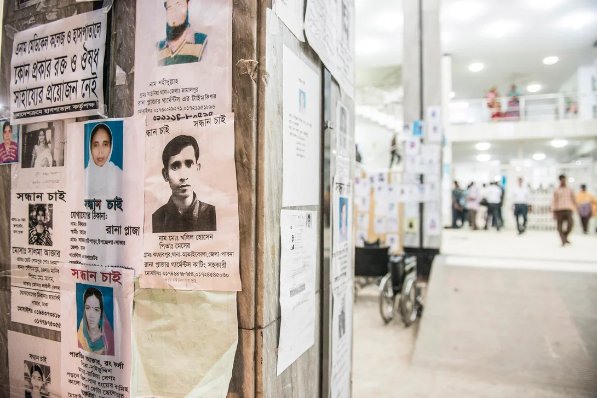

A Decade of Change:
The Untold Stories of Rana Plaza's Tragedy

The posters are put up in the hope that the people are found alive at the hospital and can be identified.
Ten years have passed since the Rana Plaza tragedy in Dhaka, Bangladesh, shook the world and revealed the human cost behind the clothes we wear.
At least 1,138 people perished, and thousands more were injured when the building collapsed on April 24, 2013. The incident marked the worst industrial disaster in the fashion industry's history. Below are a few glimpses into the lives hidden behind the chilling statistics.
- Aminul Islam, a former garment worker who took up the mantle of union activism, fought valiantly for the rights of his fellow workers within the Bangladesh Garment and Industrial Workers Federation and the Bangladesh Center for Workers’ Solidarity and warned about health and safety issues in the fashion industry before the building Rana Plaza collapsed.
- His tortured body was discovered outside Dhaka in April 2012, Aminul had been arrested and subjected to torture on multiple occasions.
- Just a year after Aminul's death, the Rana Plaza building collapse shook the world to its core. On April 23, 2013, large structural cracks were discovered in the building. The shops and the bank on the lower floors immediately closed.
- Garment factory owners on the upper floors ignored warnings and ordered workers to return the following day. Without unions to collectively voice their right to refuse unsafe work and facing poverty wages, these workers felt compelled to enter the unstable building.
- The building collapsed just an hour later, taking with it the lives of over a thousand people and injuring countless others.
- Rupaly was a machinist at the New Wave Style factory on the sixth floor of the Rana Plaza building. On April 24, 2013, she reluctantly entered the building despite the visible cracks in the walls, due to pressure from supervisors. When the building collapsed, Rupaly was trapped for 15 hours before being rescued.
- After the accident, she couldn't work for a year and relied on donations from private individuals, NGOs, and the State. Rupaly eventually returned to work in 2014, but her first new workplace soon caught on fire.
- Today, she feels stronger and more aware of workers' rights, and she received £4,000 in compensation, which she used to buy a small property in her home village.
- Poly Akhter's mother, Shahana, grieved for her daughter, who was lost in the collapse. Her other daughter, Dalia, had also worked in the factory complex but did not go to work on the day of the disaster. Shahana's story is just one of many, as families still mourn their loved ones and struggle to heal from the trauma.
- The Rana Plaza disaster led to the creation of the Accord on Fire and Building Safety in Bangladesh, under which over 200 brands committed to improving workplace safety in the country. As a result, more than 1,600 factories have become safer for two million workers. However, the fight for a safer and more equitable garment industry is far from over.
- As we remember Rana Plaza, the lives lost, and the fight for justice for Aminul Islam and other activists, we must come together to confront the systemic issues that plague the garment industry: poverty wages, lack of freedom of association, and workplace violence that force workers to make impossible choices. The memory of those lost must serve as a catalyst for change, inspiring us to build a more just and humane future in the garment industry.
- Together, we can ensure that the victims of Rana Plaza and the sacrifices of activists like Aminul Islam are not forgotten, and that their stories drive us to create a better world for garment workers everywhere. The human cost behind our clothes is too great to ignore, and it is our collective responsibility to demand transparency, accountability, and ethical practices from the brands and companies that profit from this industry.